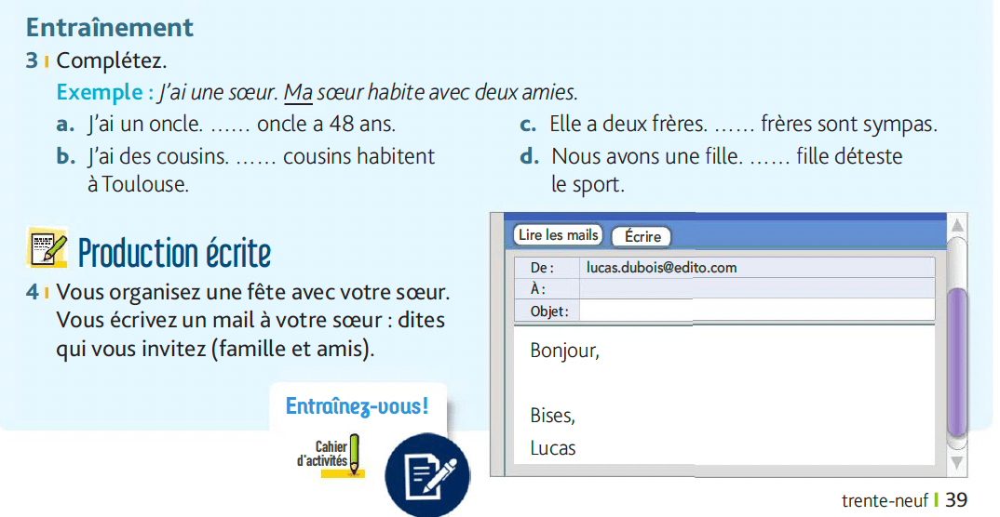
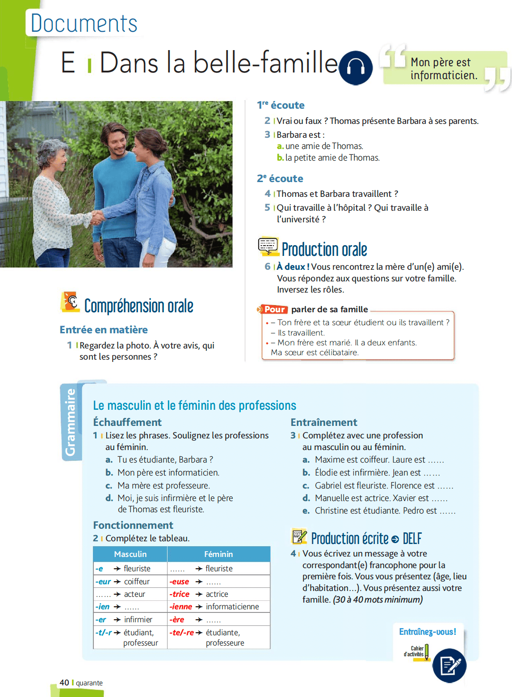
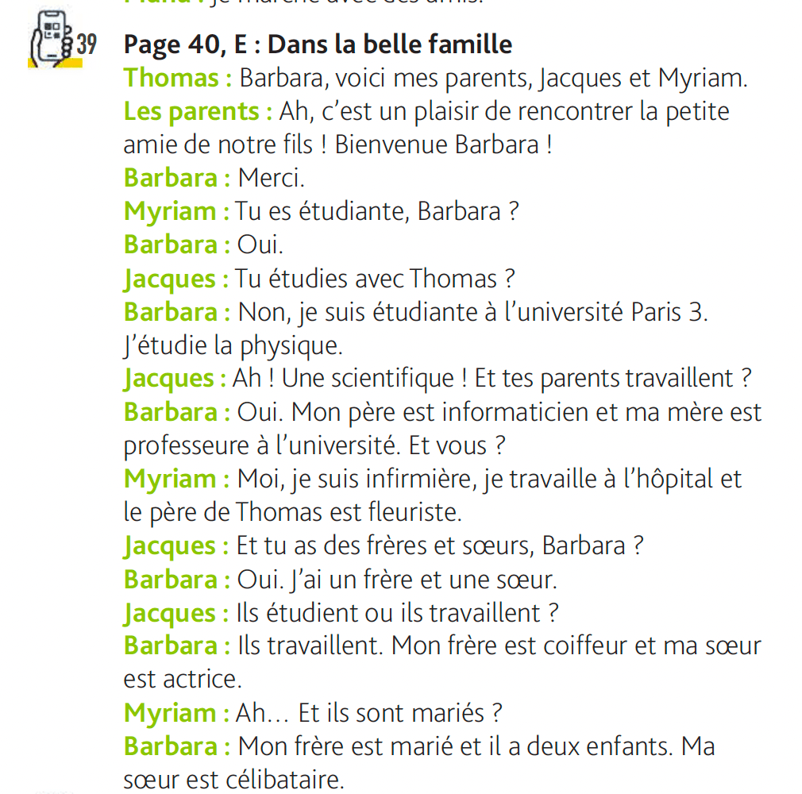

Entraînement - Page 39

3 | Complétez.
a. J'ai un oncle. oncle a 48 ans.
b. J'ai des cousins. cousins habitent à Toulouse.
c. Elle a deux frères. frères sont sympas.
d. Nous avons une fille. fille déteste le sport.
4 | Production écrite
Vous organisez une fête avec votre sœur. Vous écrivez un mail à votre sœur : dites qui vous invitez (famille et amis).
Activités Interactives
Compréhension Orale - Page 40

Écoute l'audio et réponds aux questions suivantes.
Voir la transcription

1re écoute
2 | Vrai ou faux ? Thomas présente Barbara à ses parents.
3 | Barbara est :
2e écoute
4 | Thomas et Barbara travaillent ?
5 | Qui travaille à l’hôpital ? Qui travaille à l’université ?
À l'hôpital :
À l'université :
Grammaire: Le masculin et féminin des professions
Échauffement
Lisez les phrases. Cliquez sur les professions au féminin pour les souligner.
a. Tu es étudiante, Barbara ?
b. Mon père est informaticien.
c. Ma mère est professeure.
d. Moi, je suis infirmière et le père de Thomas est fleuriste.
Exercice d'application
Entraînement (Livre Page 40)
a. Maxime est coiffeur. Laure est .
b. Élodie est infirmière. Jean est .
c. Gabriel est fleuriste. Florence est .
d. Manuelle est actrice. Xavier est .
e. Christine est étudiante. Pedro est .
Devoirs
Page 23 et 24 du Cahier d'Activités.
(À l'exception de l'exercice de phone-graphie).
Audio pour la page 23:
Audio pour la page 24: